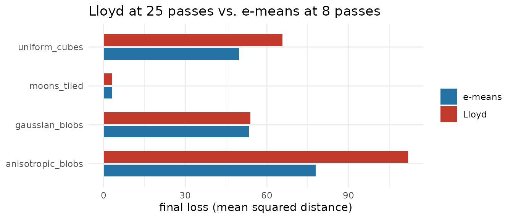
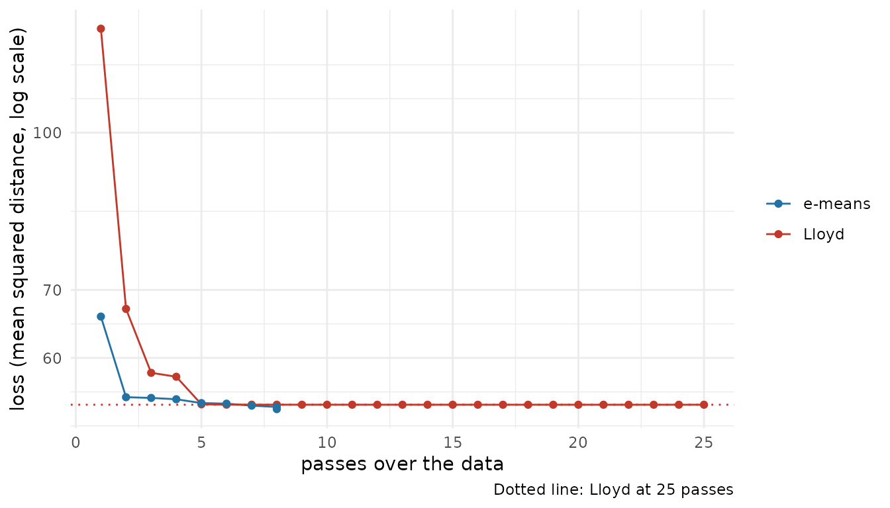
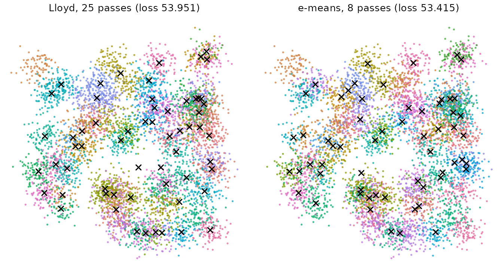

This article is an R port of the authors’ CPU demo notebook. It races e-means against Lloyd’s algorithm, the textbook k-means, on synthetic data. Lloyd runs 25 full passes, the usual “converged” reference. e-means gets 8 passes, a deliberately generous budget; the paper reports 1.2 to 3 passes are often enough.
The notebook ships its own re-implementation with a slightly
different batch law. Here emeans() uses the recipe of the
reference library (faiss/contrib/e_means), so the batch
size and step size are the ones the library would pick for the same
data.
Four synthetic distributions
The same four generators as the notebook. Each takes n
points, k clusters and dimension d, and
returns a numeric matrix, which is what emeans() and
kmeans() take.
gen_gaussian_blobs <- function(n, k, d, spread = 1) {
centers <- matrix(runif(k * d, -10, 10), k)
centers[sample(k, n, TRUE), ] + matrix(rnorm(n * d, sd = spread), n)
}
gen_anisotropic_blobs <- function(n, k, d) {
centers <- matrix(runif(k * d, -10, 10), k)
scale <- matrix(runif(k * d, 0.2, 3), k) # stretched, unequal spread per cluster
lab <- sample(k, n, TRUE)
centers[lab, ] + matrix(rnorm(n * d), n) * scale[lab, ]
}
gen_uniform_cubes <- function(n, k, d, side = 2) {
centers <- matrix(runif(k * d, -10, 10), k)
centers[sample(k, n, TRUE), ] + matrix(runif(n * d, -side, side), n)
}
gen_moons_tiled <- function(n, k, d, noise = 0.08) {
# k/2 pairs of interleaving half-moons: deliberately non-convex clusters.
pairs <- max(1, k %/% 2)
per <- n %/% pairs
half <- per %/% 2
x <- map(seq_len(pairs), function(p) {
shift <- runif(2, -15, 15)
t <- runif(per, 0, pi)
top <- cbind(cos(t), sin(t))[seq_len(half), , drop = FALSE]
bot <- cbind(1 - cos(t), 1 - sin(t) - 0.5)[-seq_len(half), , drop = FALSE]
moon <- rbind(top, bot) * 6 + matrix(shift, per, 2, byrow = TRUE)
moon + matrix(rnorm(2 * per, sd = noise * 6), per)
}) |>
reduce(rbind)
if (d > 2) x <- cbind(x, matrix(rnorm(nrow(x) * (d - 2), sd = 0.05), nrow(x)))
x
}
generators <- list(
gaussian_blobs = gen_gaussian_blobs,
anisotropic_blobs = gen_anisotropic_blobs,
uniform_cubes = gen_uniform_cubes,
moons_tiled = gen_moons_tiled
)Parameters
The notebook defaults: 6,000 points, 60 clusters, 16 dimensions.
N <- 6000
K <- 60
D <- 16
EPOCHS_EMEANS <- 8
ITERS_LLOYD <- 25
emeans_recipe(N, K, D, EPOCHS_EMEANS)[c("batch_size", "alpha0", "total_steps", "batch_law")] |>
as_tibble()
#> # A tibble: 1 × 4
#> batch_size alpha0 total_steps batch_law
#> <dbl> <dbl> <dbl> <chr>
#> 1 64 0.0844 752 qualityAt d <= 16 the library picks the quality
batch law. That gives batches of a few hundred points, so 8 epochs make
about 150 centroid updates, where Lloyd makes 25.
The race
Both methods start from the same random rows. The loss is the mean squared distance from each point to its nearest centroid, measured on the final centroids.
race <- function(x, k, seed = 0) {
set.seed(seed)
init <- x[sample(nrow(x), k), ]
t_lloyd <- system.time(
km <- suppressWarnings(kmeans(x, init, iter.max = ITERS_LLOYD, algorithm = "Lloyd"))
)[["elapsed"]]
t_em <- system.time(
em <- emeans(x, init, nepochs = EPOCHS_EMEANS, seed = seed + 1)
)[["elapsed"]]
tibble(
lloyd_loss = km$tot.withinss / nrow(x),
emeans_loss = em$tot.withinss / nrow(x),
lloyd_s = t_lloyd,
emeans_s = t_em
)
}
run_races <- function(d) {
imap(generators, function(gen, name) {
set.seed(42)
x <- gen(N, K, d) # generate before race() reseeds for its starting rows
race(x, K)
}) |>
list_rbind(names_to = "distribution") |>
mutate(emeans_vs_lloyd = sprintf("%+.1f%%", 100 * (emeans_loss / lloyd_loss - 1)))
}
results <- run_races(D)
knitr::kable(results, digits = 4)| distribution | lloyd_loss | emeans_loss | lloyd_s | emeans_s | emeans_vs_lloyd |
|---|---|---|---|---|---|
| gaussian_blobs | 53.9510 | 53.4146 | 0.069 | 0.013 | -1.0% |
| anisotropic_blobs | 111.8506 | 77.9800 | 0.095 | 0.013 | -30.3% |
| uniform_cubes | 65.7802 | 49.7168 | 0.087 | 0.012 | -24.4% |
| moons_tiled | 3.1358 | 3.0099 | 0.094 | 0.012 | -4.0% |
A negative last column means e-means reached a lower loss than Lloyd at 25 passes, using a third of the passes.
results |>
select(distribution, Lloyd = lloyd_loss, `e-means` = emeans_loss) |>
pivot_longer(-distribution, names_to = "method", values_to = "loss") |>
ggplot(aes(loss, distribution, fill = method)) +
geom_col(position = position_dodge(width = 0.7), width = 0.6) +
scale_fill_manual(values = c(Lloyd = "#c0392b", `e-means` = "#2471a3")) +
labs(x = "final loss (mean squared distance)", y = NULL, fill = NULL,
title = "Lloyd at 25 passes vs. e-means at 8 passes") +
theme_minimal()
Both methods finish in well under a second on 6,000 points, so these timings say little about speed. The benchmark article times them on up to a million points.
Loss per pass
Lloyd’s loss after i passes comes from
kmeans(iter.max = i) with the same starting centers. For
e-means, the per-epoch value is the objective accumulated while the
centroids move during that epoch. The last point is the loss of the
returned centroids.
set.seed(42)
x <- gen_gaussian_blobs(N, K, D)
set.seed(0)
init <- x[sample(N, K), ]
lloyd_curve <- tibble(pass = seq_len(ITERS_LLOYD)) |>
mutate(loss = map_dbl(pass, \(i)
suppressWarnings(kmeans(x, init, iter.max = i, algorithm = "Lloyd"))$tot.withinss / N),
method = "Lloyd")
em <- emeans(x, init, nepochs = EPOCHS_EMEANS, seed = 1)
em_curve <- tibble(
pass = c(em$iteration_stats$epoch, EPOCHS_EMEANS),
loss = c(em$iteration_stats$obj / N, em$tot.withinss / N),
method = "e-means"
)
bind_rows(lloyd_curve, em_curve) |>
ggplot(aes(pass, loss, colour = method)) +
geom_hline(yintercept = min(lloyd_curve$loss), linetype = "dotted", colour = "#c0392b") +
geom_line() +
geom_point(size = 1.5) +
scale_y_log10() +
scale_colour_manual(values = c(Lloyd = "#c0392b", `e-means` = "#2471a3")) +
labs(x = "passes over the data", y = "loss (mean squared distance, log scale)",
colour = NULL, caption = "Dotted line: Lloyd at 25 passes") +
theme_minimal()
What the clusterings look like
The first two coordinates, coloured by cluster, with centroids as crosses.
km <- suppressWarnings(kmeans(x, init, iter.max = ITERS_LLOYD, algorithm = "Lloyd"))
label <- c(
Lloyd = sprintf("Lloyd, 25 passes (loss %.3f)", km$tot.withinss / N),
emeans = sprintf("e-means, 8 passes (loss %.3f)", em$tot.withinss / N)
)
points_df <- bind_rows(
tibble(x1 = x[, 1], x2 = x[, 2], cluster = km$cluster, method = label[["Lloyd"]]),
tibble(x1 = x[, 1], x2 = x[, 2], cluster = em$cluster, method = label[["emeans"]])
)
centers_df <- bind_rows(
tibble(x1 = km$centers[, 1], x2 = km$centers[, 2], method = label[["Lloyd"]]),
tibble(x1 = em$centers[, 1], x2 = em$centers[, 2], method = label[["emeans"]])
)
ggplot(points_df, aes(x1, x2)) +
geom_point(aes(colour = factor(cluster)), size = 0.3, alpha = 0.6) +
geom_point(data = centers_df, shape = 4, size = 1.8, stroke = 0.8) +
facet_wrap(~ factor(method, levels = label)) +
scale_colour_manual(values = grDevices::hcl.colors(K, "Dark 3"), guide = "none") +
coord_equal() +
theme_void() +
theme(strip.text = element_text(size = 10, margin = margin(b = 4)))
Low dimension
The authors fitted the scaling laws on data with dimension 96 to
1024. Their notebook warns that at very low dimension (d below about 8)
the chosen batch and step can be too aggressive, and e-means can lose to
Lloyd on a given seed. The library uses the smaller quality batch at
d <= 16 and turns cluster revival off at
d <= 2. The same race at D = 2:
run_races(2) |>
select(distribution, lloyd_loss, emeans_loss, emeans_vs_lloyd) |>
knitr::kable(digits = 4)| distribution | lloyd_loss | emeans_loss | emeans_vs_lloyd |
|---|---|---|---|
| gaussian_blobs | 1.0684 | 1.0578 | -1.0% |
| anisotropic_blobs | 1.3949 | 1.3381 | -4.1% |
| uniform_cubes | 1.1356 | 1.1039 | -2.8% |
| moons_tiled | 3.0952 | 3.0079 | -2.8% |
More articles
The package website has two articles that need data or packages not shipped with the package:
-
Benchmark:
time and quality against
kmeans(),hclust()andMclust(). - A resolution tree for single-cell data: a recursive e-means tree on 73,042 cells, compared with Seurat’s Louvain clustering.
Reference
Bessa S, Mazaré P-E, Szilvasy G, Touvron H, Picard D, Douze M, Jégou H (2026). e-means: outperforming k-means (in one-tenth the epochs). arXiv:2611.09501. https://arxiv.org/abs/2611.09501